Visualize incomplete and imputed data with ggmice
The ggmice package provides plotting functions for the evaluation of incomplete data, mice imputation models, and multiply imputed data sets (mice::mids). The functions in ggmice adhere to the ‘grammar of graphics’ philosophy, popularized by the ggplot2 package. With that, ggmice enhances imputation workflows and provides plotting objects that are easily extended and manipulated by each individual ‘imputer’.
This vignette gives an overview of the core plotting functions in ggmice. Experienced mice users may already be familiar with the lattice style plotting functions in mice. These ‘old friends’ such as mice::bwplot() can be re-created with ggmice, see the Old friends vignette for advice.
Set-up
The ggmice package can be installed from GitHub as follows:
install.packages("devtools")
devtools::install_github("amices/ggmice")In this vignette we’ll use ggmice in combination with the imputation package mice and the plotting package ggplot2. It is recommended to load mice and ggplot2 into your workspace as well, but in your own workflow you could choose to call their functions directly instead (e.g., mice::mice() or ggplot2::aes()). In this vignette, we assume that all three packages are loaded, as well as an incomplete and imputed version of the mice::boys dataset.
# load packages
library(mice)
#>
#> Attaching package: 'mice'
#> The following object is masked from 'package:stats':
#>
#> filter
#> The following objects are masked from 'package:base':
#>
#> cbind, rbind
library(ggplot2)
library(ggmice)
#>
#> Attaching package: 'ggmice'
#> The following objects are masked from 'package:mice':
#>
#> bwplot, densityplot, stripplot, xyplot
# load incomplete dataset
dat <- boys
# generate imputations
imp <- mice(dat, method = "pmm", printFlag = FALSE)Incomplete data
The ggmice package contains functions to explore incomplete data.
Missing data pattern
The plot_pattern() function displays the missing data pattern in an incomplete dataset. The argument data (the incomplete dataset) is required, the argument square is optional and determines whether the missing data pattern has square or rectangular tiles, and the optional argument rotate changes the angle of the variable names 90 degrees if requested.
# create missing data pattern plot
plot_pattern(dat)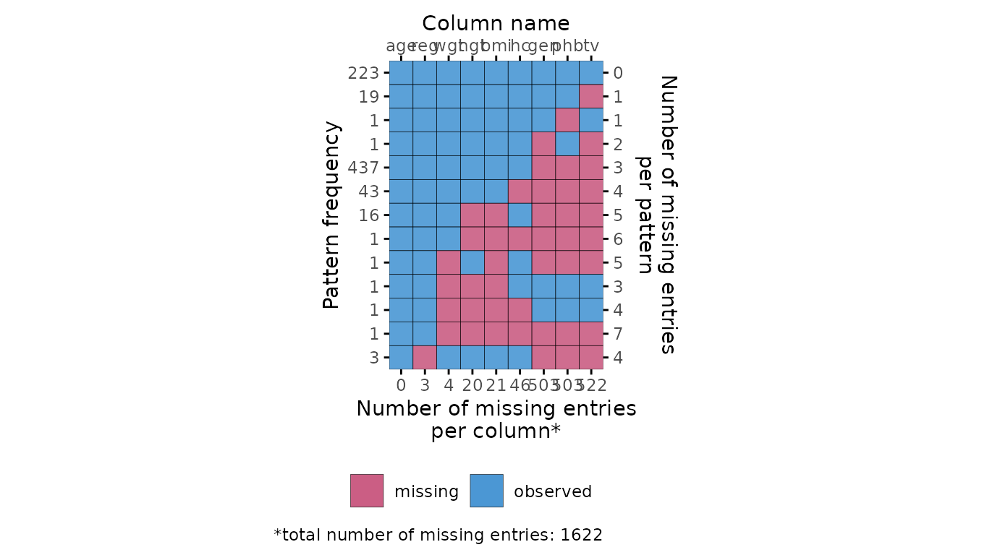
# specify optional arguments
plot_pattern(dat, square = TRUE, rotate = TRUE)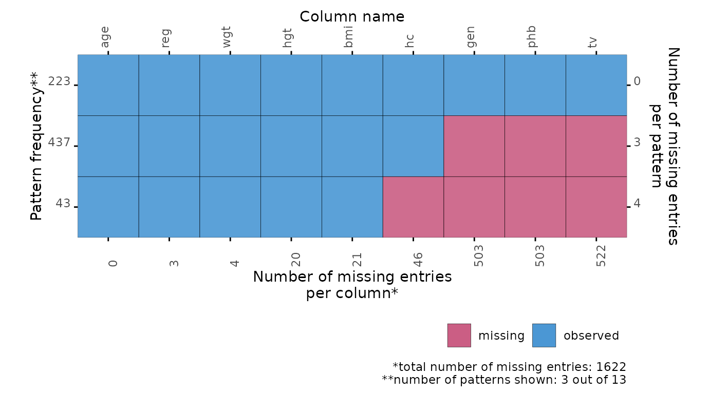
Influx and outflux
The plot_flux() function produces an influx-outflux plot. The influx of a variable quantifies how well its missing data connect to the observed data on other variables. The outflux of a variable quantifies how well its observed data connect to the missing data on other variables. In general, higher influx and outflux values are preferred when building imputation models. The plotting function requires an incomplete dataset (argument data), and takes optional arguments to adjust the legend and axis labels.
# create influx-outflux plot
plot_flux(dat)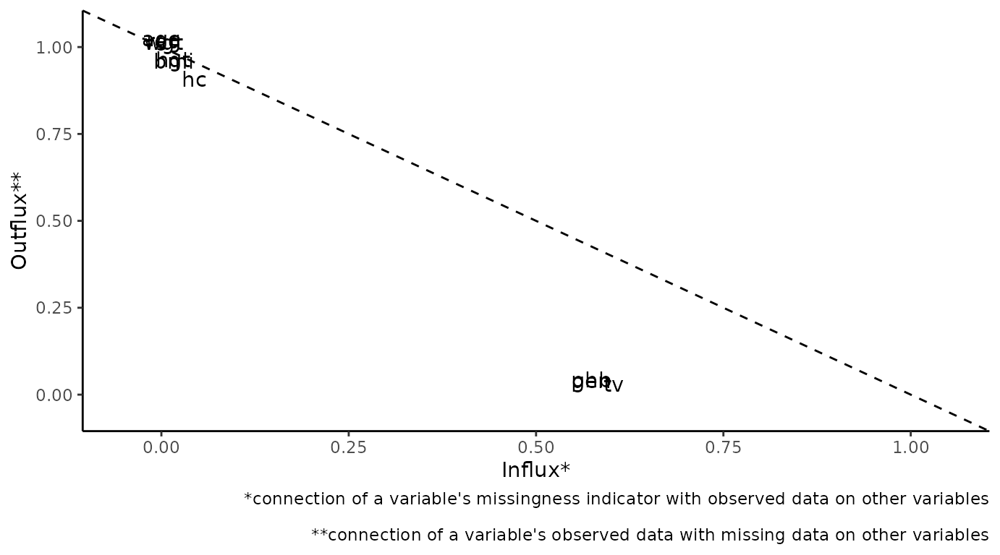
# specify optional arguments
plot_flux(
dat,
label = FALSE,
caption = FALSE
)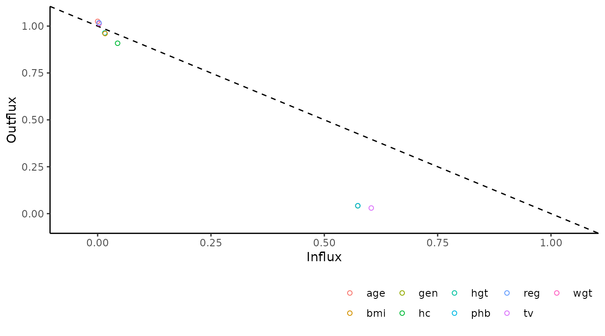
Correlations between variables
The function plot_corr() can be used to investigate relations between variables, for the development of imputation models. Only one of the arguments (data, the incomplete dataset) is required, all other arguments are optional.
# create correlation plot
plot_corr(dat)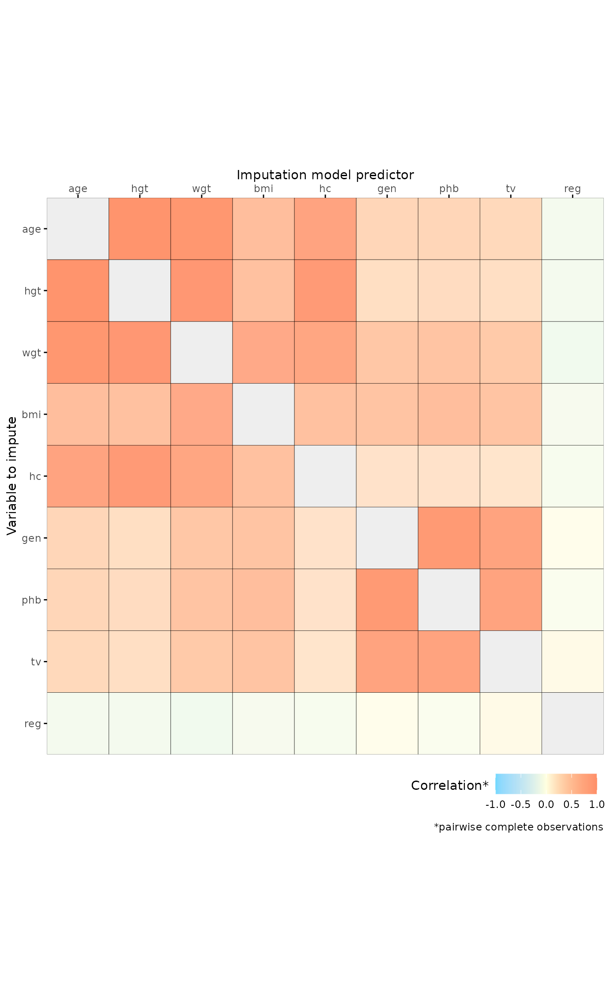
# specify optional arguments
plot_corr(
dat,
vrb = c("hgt", "wgt", "bmi"),
label = TRUE,
square = FALSE,
diagonal = TRUE
)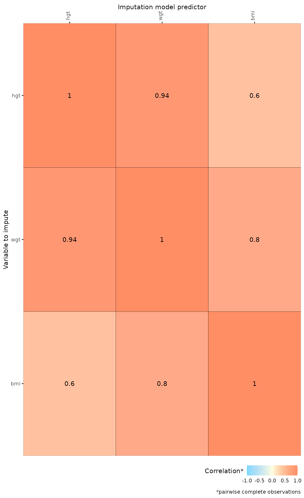
Predictor matrix
The function plot_pred() displays mice predictor matrices. A predictor matrix is typically created using mice::make.predictorMatrix(), mice::quickpred(), or by using the default in mice::mice() and extracting the predictorMatrix from the resulting mids object. The plot_pred() function requires a predictor matrix (the data argument), but other arguments can be provided too.
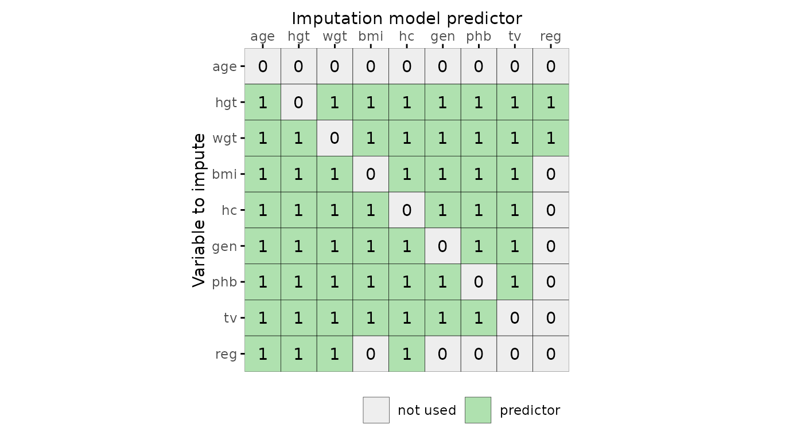
# specify optional arguments
plot_pred(
pred,
label = TRUE,
square = FALSE
)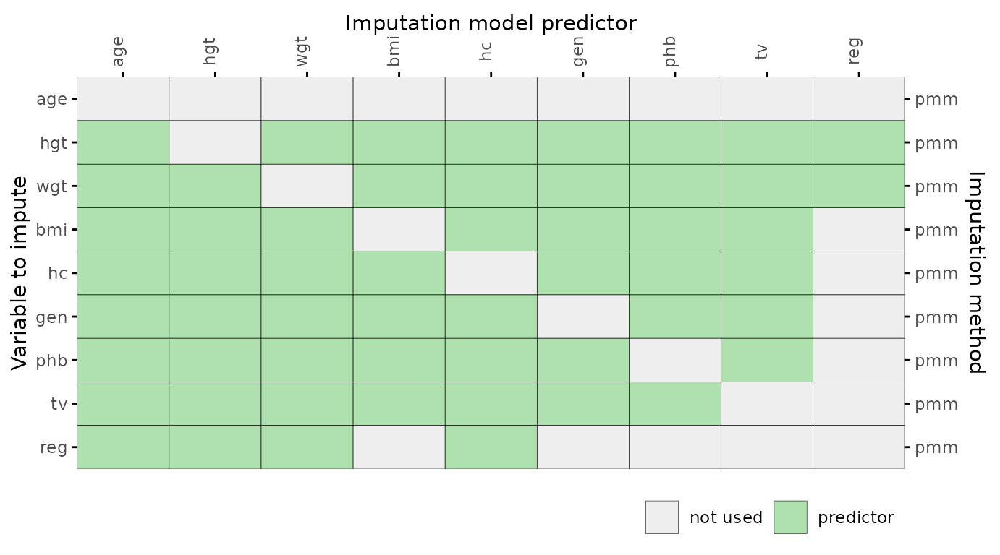
The ggmice() function
The ggmice function processes incomplete data in such a way that it can be displayed with ggplot2. The missing values are displayed on the axes (i.e., a missing value for the x-variable is plotted on top of the y-axis, and vice versa). Note that, in contrast to the ggplot() function, ggmice() requires an aesthetic mapping (argument mapping).
# create scatter plot with continuous variables
ggmice(dat, aes(age, bmi)) +
geom_point()
# create scatter plot with a categorical variable
ggmice(dat, aes(gen, bmi)) +
geom_point()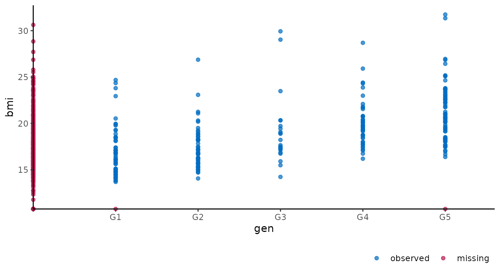
Imputed data
The ggmice package contains two functions to evaluate observed and imputed data.
Algorithmic convergence
The function plot_trace() plots the trace lines of the MICE algorithm for convergence evaluation. The only required argument is data (to supply a mice::mids object). The optional argument vrb defaults to "all", which would display traceplots for all variables.
# create traceplot for one variable
plot_trace(imp, "bmi")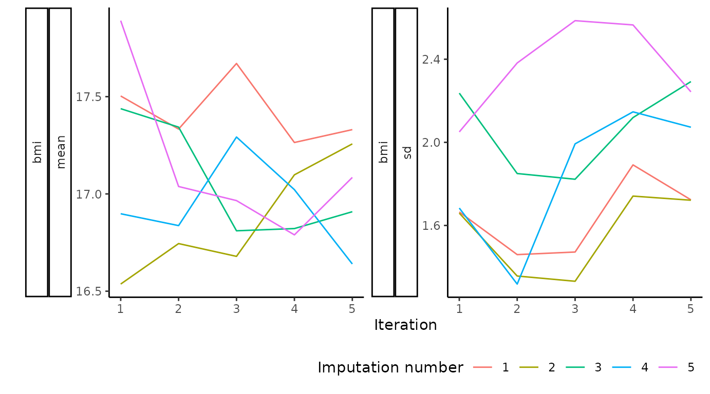
The ggmice() function
The ggmice function is versatile. It produces a ggplot object that can be extended to mimic every type of plot for observed and imputed data in mice, see see this vignette for advise. Below are some examples of plots produced with ggmice(). Note that, in contrast to the ggplot() function, ggmice() requires an aesthetic mapping (argument mapping).
# create scatter plot with continuous variables
ggmice(imp, aes(age, bmi)) +
geom_point()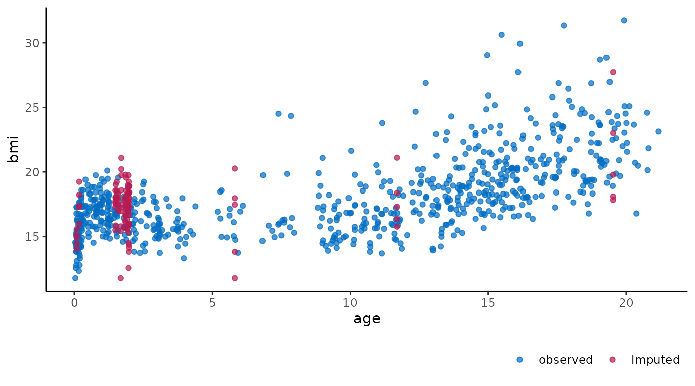
# create scatter plot with a categorical variable
ggmice(imp, aes(gen, bmi)) +
geom_point()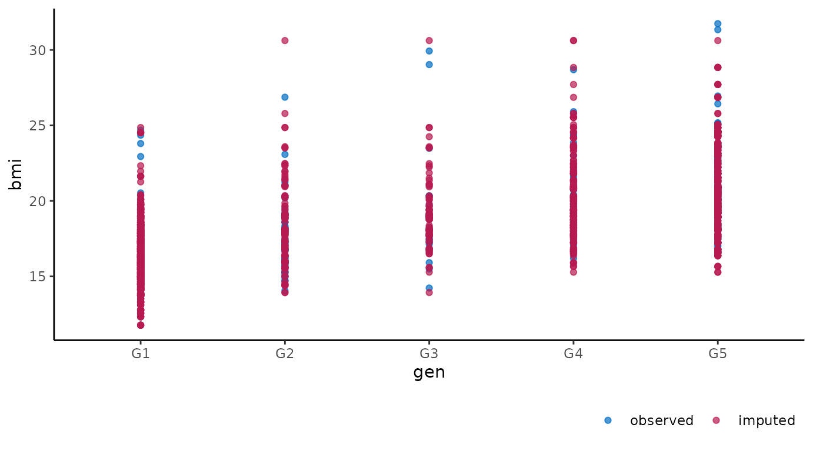
# create scatter plot with a transformed variable
ggmice(imp, aes(log(wgt), hgt)) +
geom_point()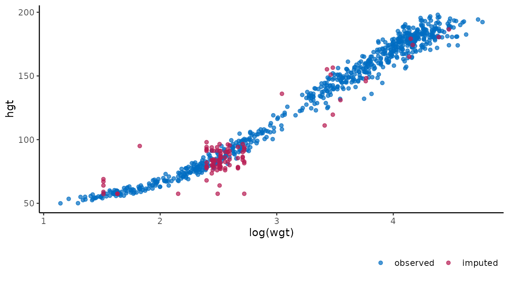
# create stripplot with boxplot overlay
ggmice(imp, aes(x = .imp, y = bmi)) +
geom_jitter(height = 0) +
geom_boxplot(fill = "white", alpha = 0.75, outlier.shape = NA) +
labs(x = "Imputation number")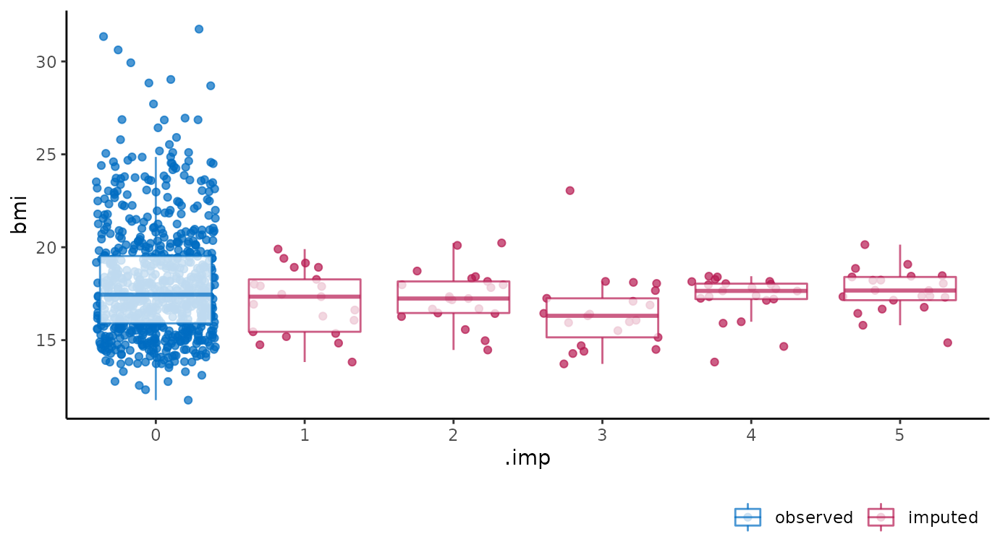
# this vignette was generated with R session
sessionInfo()
#> R version 4.1.3 (2022-03-10)
#> Platform: x86_64-pc-linux-gnu (64-bit)
#> Running under: Ubuntu 20.04.4 LTS
#>
#> Matrix products: default
#> BLAS: /usr/lib/x86_64-linux-gnu/blas/libblas.so.3.9.0
#> LAPACK: /usr/lib/x86_64-linux-gnu/lapack/liblapack.so.3.9.0
#>
#> locale:
#> [1] LC_CTYPE=C.UTF-8 LC_NUMERIC=C LC_TIME=C.UTF-8
#> [4] LC_COLLATE=C.UTF-8 LC_MONETARY=C.UTF-8 LC_MESSAGES=C.UTF-8
#> [7] LC_PAPER=C.UTF-8 LC_NAME=C LC_ADDRESS=C
#> [10] LC_TELEPHONE=C LC_MEASUREMENT=C.UTF-8 LC_IDENTIFICATION=C
#>
#> attached base packages:
#> [1] stats graphics grDevices utils datasets methods base
#>
#> other attached packages:
#> [1] ggmice_0.0.1.9000 ggplot2_3.3.5 mice_3.14.0
#>
#> loaded via a namespace (and not attached):
#> [1] tidyselect_1.1.2 xfun_0.30 bslib_0.3.1 purrr_0.3.4
#> [5] lattice_0.20-45 colorspace_2.0-3 vctrs_0.3.8 generics_0.1.2
#> [9] htmltools_0.5.2 yaml_2.3.5 utf8_1.2.2 rlang_1.0.2
#> [13] pkgdown_2.0.2 jquerylib_0.1.4 pillar_1.7.0 glue_1.6.2
#> [17] withr_2.5.0 lifecycle_1.0.1 stringr_1.4.0 munsell_0.5.0
#> [21] gtable_0.3.0 ragg_1.2.2 memoise_2.0.1 evaluate_0.15
#> [25] labeling_0.4.2 knitr_1.37 fastmap_1.1.0 fansi_1.0.2
#> [29] highr_0.9 broom_0.7.12 Rcpp_1.0.8.3 backports_1.4.1
#> [33] scales_1.1.1 cachem_1.0.6 desc_1.4.1 jsonlite_1.8.0
#> [37] farver_2.1.0 systemfonts_1.0.4 fs_1.5.2 textshaping_0.3.6
#> [41] digest_0.6.29 stringi_1.7.6 dplyr_1.0.8 rprojroot_2.0.2
#> [45] grid_4.1.3 cli_3.2.0 tools_4.1.3 magrittr_2.0.2
#> [49] sass_0.4.0 tibble_3.1.6 crayon_1.5.0 tidyr_1.2.0
#> [53] pkgconfig_2.0.3 ellipsis_0.3.2 rmarkdown_2.13 R6_2.5.1
#> [57] compiler_4.1.3